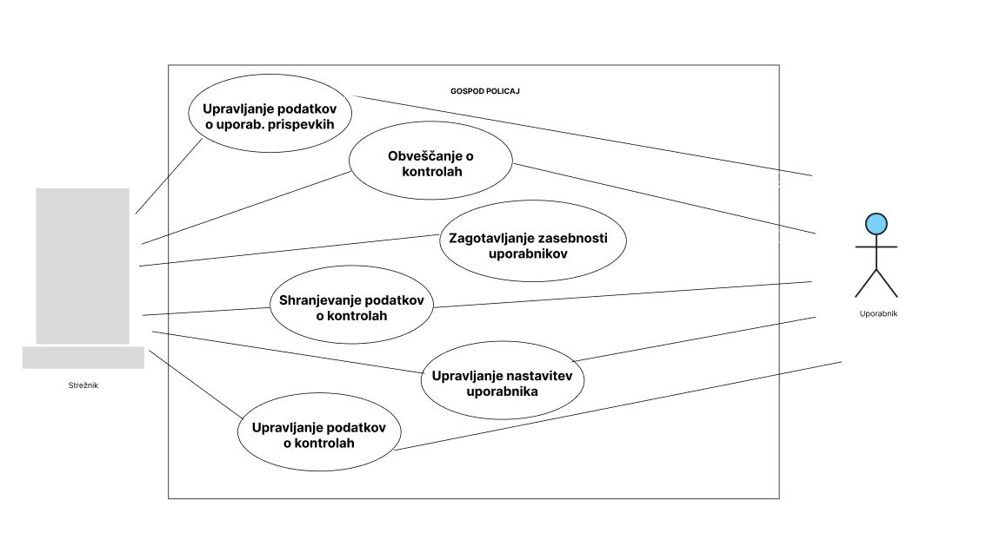

Funkcionalnost strežnika
Nabor funkcionalnosti
- Shranjevanje podatkov: Strežnik omogoča zanesljivo shranjevanje informacij o policijskih kontrolah, vključno z lokacijami, datumom, časom in vrsto kontrol, ter podatkov o radarjih za merjenje hitrosti.
- Obdelava zahtevkov uporabnikov: Strežnik sprejema zahtevke uporabnikov za informacije o policijskih kontrolah in radarjih, ter zagotavlja hitre in natančne odgovore, ki temeljijo na shranjenih podatkih.
- Obveščanje o policijskih kontrolah: Strežnik pošilja sporočila o aktivnih kontrolah s podrobnostmi o datumu, času in vrsti kontrole.
- Upravljanje uporabniških prispevkov: Strežnik omogoča uporabnikom dodajanje in urejanje njihovih prispevkov o policijskih kontrolah in radarjih, ter skrbi za integracijo teh prispevkov v skupno bazo podatkov za izboljšanje informacij.
- Personalizacija vsebin: Strežnik prilagaja vsebine uporabnikom na podlagi njihovih individualnih preferenc in zgodovine interakcije z aplikacijo, kar omogoča bolj relevantne informacije in izboljšano uporabniško izkušnjo.
- Zagotavljanje varnosti: Strežnik skrbi za varovanje zasebnosti uporabnikov in varnost shranjenih podatkov, tako da preprečuje nepooblaščen dostop ter zlorabo informacij.
UML - Use Case Diagram
